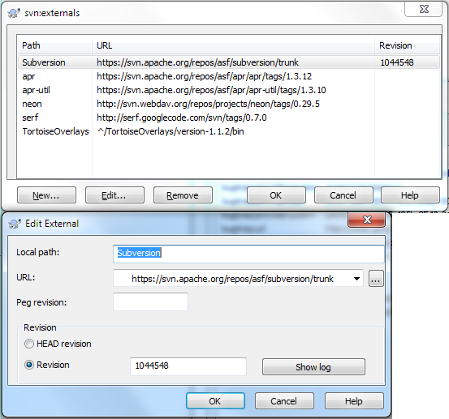
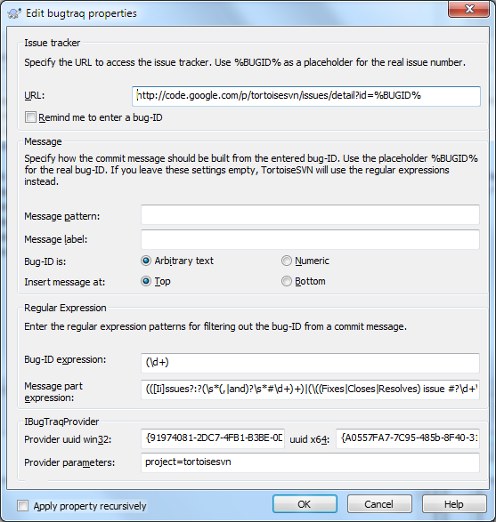

What's New in TortoiseSVN 1.7
TortoiseSVN 1.7 is a superset of all previous TortoiseSVN releases,
and is considered the current stable and "best" release. Anything in earlier versions
is also in 1.7, but 1.7 contains features and
bugfixes not present in any earlier release.
TortoiseSVN 1.7 dropped support for Windows 2000. It requires
at least Windows XP with service pack 3 to work. If you're still
using Windows 2000 or Windows XP without service pack 3, you
either have to upgrade your OS or keep using TortoiseSVN 1.6.
This page describes only major changes. For a complete list
of changes, you can check our
commit logs.
$ADSENSE_INPAGE$
working copy metadata storage improvements
Subversion 1.7 features a complete re-write of the working copy
metadata management system of Subversion, code named WC-NG.
Centralized Metadata Storage
A key feature of the changes introduced in Subversion 1.7 is the
centralization of worky copy metadata storage into a single location.
Instead of a .svn directory in every directory in the working
copy, Subversion 1.7 working copies have just one .svn
directory—in the root of the working copy. This directory includes
(among other things) an SQLite-backed database which contains all of the
metadata Subversion needs for that working copy.
Even though the data is stored in a structured format, the relationships
between the data are complex. We highly discourage external tools from
modifying the data held in this database, as such modification is likely to
result in working copy corruption.
Upgrading the Working Copy
Subversion 1.7 introduces substantial changes to the working copy format.
In previous releases, Subversion would automatically update
the working copy to the new format when a write operation was performed.
Subversion 1.7, however, will make this a manual step.
Before you can use an existing working copy with TortoiseSVN 1.7, you
have to upgrade the format first. If you right-click on an old
working copy, TortoiseSVN only shows you one command in the
context menu: Upgrade working copy.

Once you've upgraded your working copies, older SVN clients
won't be able to access those working copies. So make sure
that you update all your SVN clients (in case you use not
just TortoiseSVN).
x64 Installer
In previous releases, users who installed TortoiseSVN on an
x64 OS also had to separately install the 32-bit version of
TortoiseSVN to get its features for 32-bit applications too.
TortoiseSVN 1.7 includes the required 32-bit parts in its
x64 installers. There's no need to install the 32-bit version
of TortoiseSVN on x64 OS.
Property dialogs
Handling SVN properties is now much easier. Most of the
properties you want or need to set on your working copies
can now be set and modified without knowing the exact format.
TortoiseSVN 1.7 provides custom dialogs for most of the known
properties.


The above screenshots show the new property dialogs for
the svn:externals and all the bugtraq:
properties. There are more custom property dialogs available
in TortoiseSVN 1.7. Please have a look at the
docs
to find out about all of them.
Windows 7 Library
The explorer in Windows 7 introduced libraries, which are
containers for files and folders that have something in common.
TortoiseSVN 1.7 creates a new library type for SVN working
copies.

If you put the root folder of your working copies in that new
library folder, you get four buttons at the top of the explorer
which execute the most used commands: Commit, Update, Check for
modifications and Show log.
This saves you from using the right-click context menu for
these often used commands and really saves a lot of mouse clicks.
Log dialog
Revision graph
Branch/Tag dialog
Branch/Tag dialog
Repository browser
TortoiseMerge
Compatibility concerns
Older clients and servers interoperate transparently with 1.7
servers and clients. However, some of the new 1.7 features may
not be available unless both client and server are the latest
version. There are also cases where a new feature will work
but will run less efficiently if the client is new and the
server old.
New Feature Compatibility Table
¶
| New Feature |
Minimum Client1 |
Minimum Server |
Minimum Repository |
Notes |
| HTTPv2 |
1.7 |
1.7 |
any |
Permutations of older client/server combinations will continue to
function at the pre-1.7 feature level. |
| WC-NG |
1.7 |
any |
any |
|
1Reminder: when using the file://
repository access method, the Subversion program is both the client
and the server. |